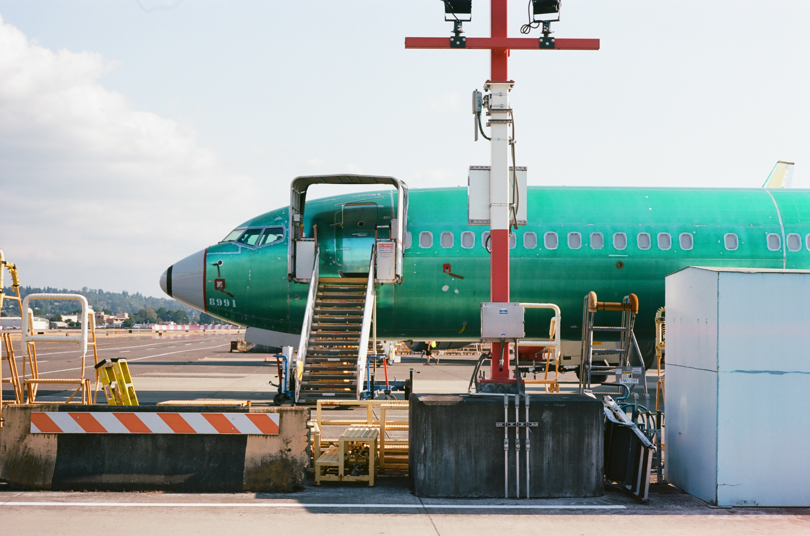
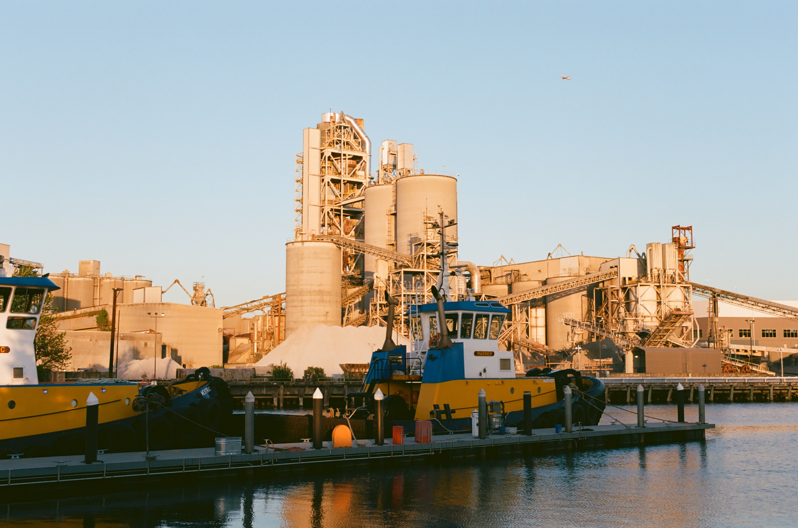
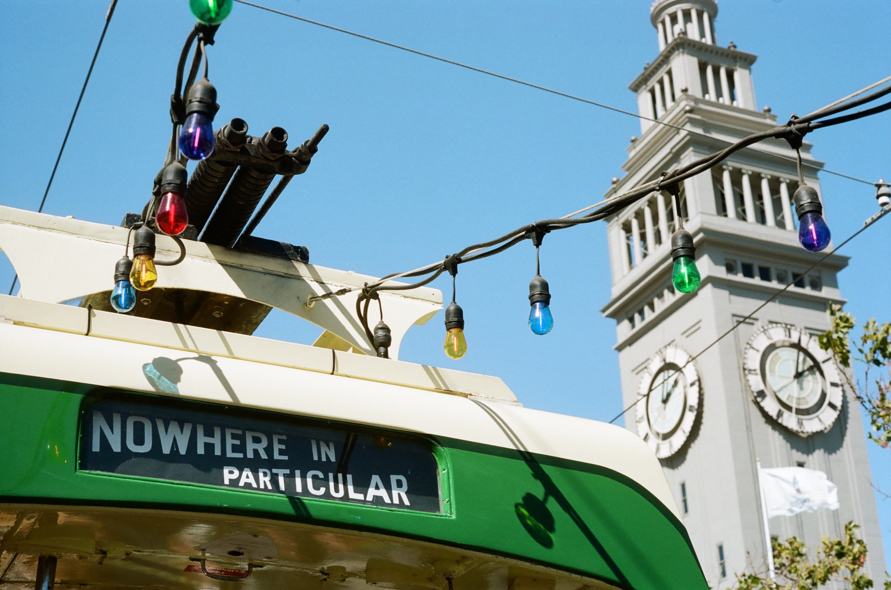
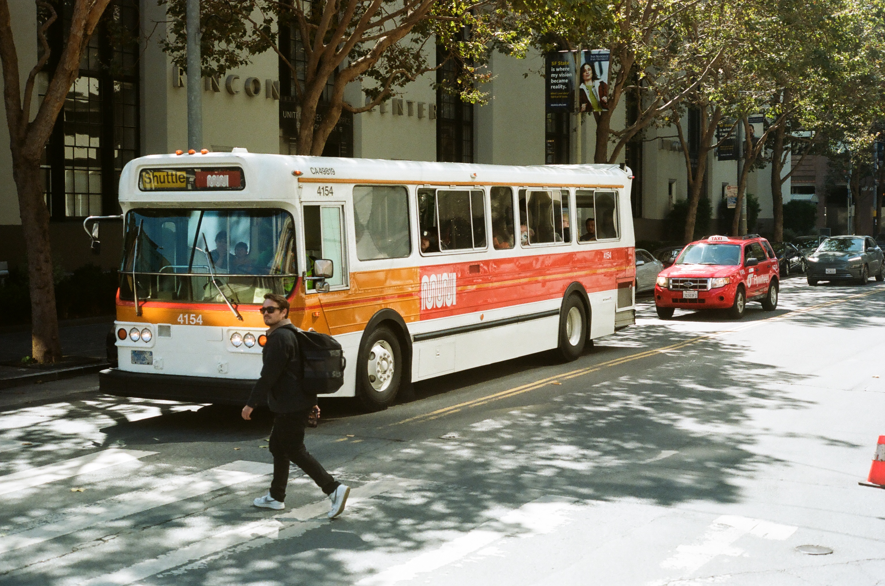

“Maritime Manufacturing and Logistics (MML) Zoning ... a concentration of core industrial and maritime uses including manufacturing, warehousing, shipping, and logistics activities and is well served with truck, rail, and maritime or freight infrastructure.”
from a March 2023 report by the City of Seattle ↗
This work explores coastal land use along the west coast, especially in Seattle Washington, Oakland, and Los Angeles California. Inspired by the sweeping views of harbor cranes and containers visible in the heart of Seattle from freeways bridges while on long motorcycle rides around the city, as well as the film HEAT (1995, dir. Michael Mann), the sprawling scale of industry lends itself very naturally to the wide aspect ratio of ClaireViolet's panoramic film work.
Begun in April 2025 as tariff discussions began to slow global logistics networks in the United States, these photographs are meant to embody dependence, and explore the feelings of anti-social hostility, suspicion, and emptiness that dependence creates. This work is a deep obsession with shape, color, and the non-human landscapes required to support the modern world. It aims to capture the contrast between the vibrant colors and familiar, playful shapes of shipping containers with the long expanses of empty concrete, razor wire fencing, and suspicious glances from private security SUVs on "public access" streets. These glimpses from camera lenses pressed through openings in chainlink fences show the enormity of machinery which makes our daily lives and humanity feel lost, out-of-proportion. The abstraction of ourselves and our lives from what we consume, and how it comes to us, is an isolating force upon society, which this project attempts to dissect through possession of inherently distant and indifferent forces.


Since October 2024, ClaireViolet has been collecting thousands of panoramic color photographs focused on public transit and transportation infrastructure across North America. Subways, busses, cable cars, ferries, aircraft, taxis, bridges and tunnels, in New York, Toronto, LA, Seattle, Denver, Portland, and the Bay Area.
This project attempts to provide a very romantic view of the ways people get around, images full of detail and complexity. Inviting bright colors highlight the sense of community that service and a love of transit provides, while other moments explore the realities created by decades of disinterest and lack of investment in systems people rely on to live and work. Work ranges from beautiful blue skies behind cable cars running up and down the hills of San Francisco, to the darkest corners of the New York subway, at the narrow end of the platform covered in graffiti and drenched in fear.
Every New Yorker has their stop, or knows the way they felt the first time they walked through Grand Central. The absence of the Second Avenue Subway has inconvenienced the east-side since 1942. San Francisco's East Bay commuters all know to bring headphones for their commute through the Transbay tube. The mythology of the Harvard Screech echoes eternally through the minds of Bostonians. We cry on the platform waiting for the train when things aren't going the way we'd hoped, and work isn't going well. There is a vulnerability and a beauty in trusting a social contract built for everyone which is all too rare at present that ClaireViolet's work celebrates wholeheartedly.
People develop a strong sense of ownership toward their local transit systems, and these photographs are a love-letter for what moves people, literally and figuratively.
This project will soon include Chicago, Vancouver, Boston, and Washington DC.

